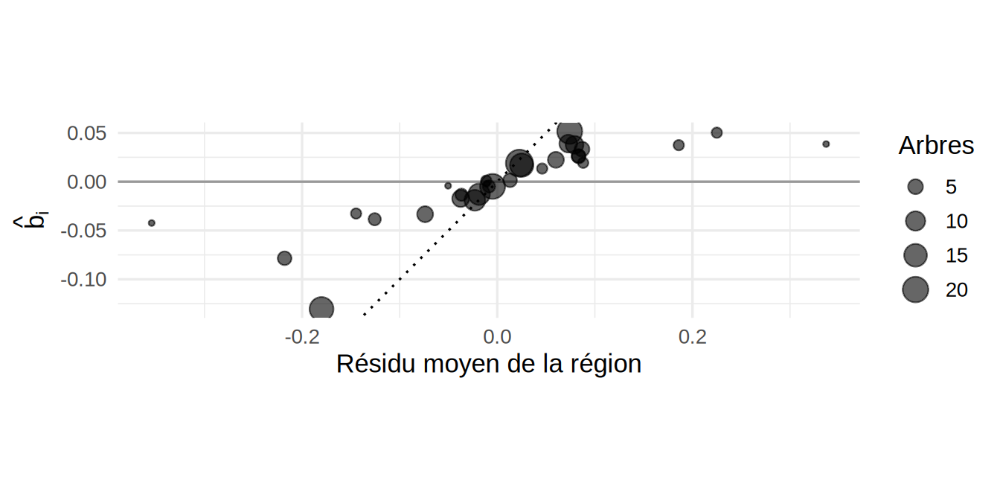
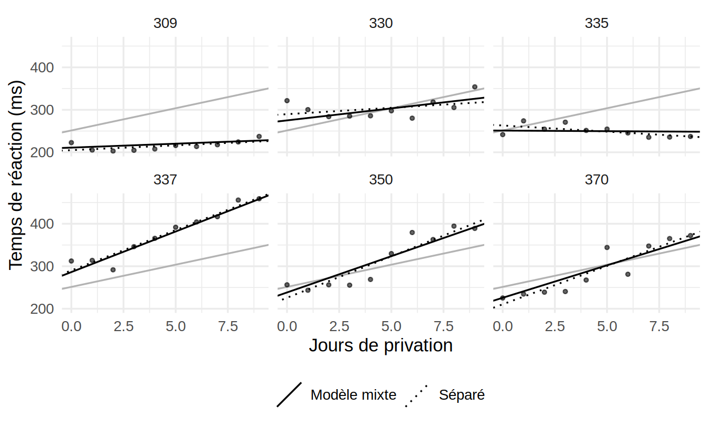
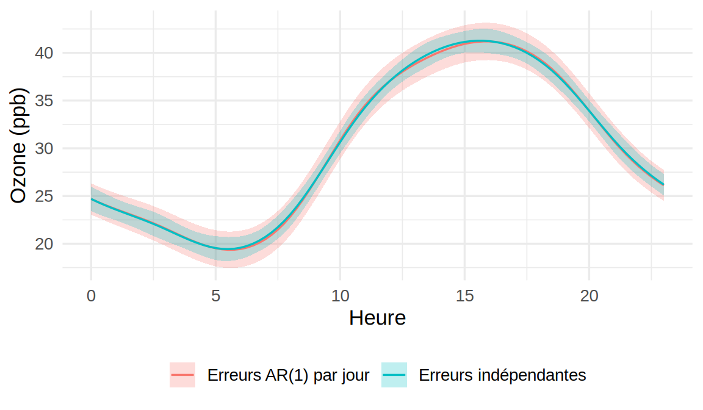
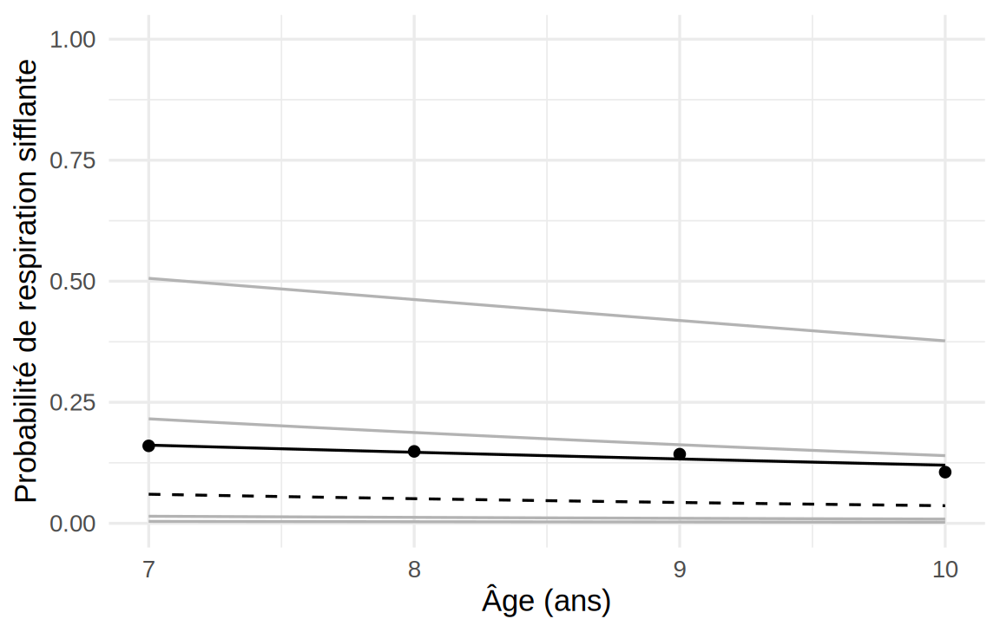
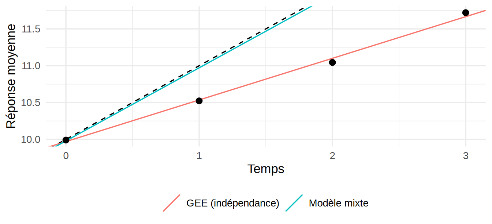

library(ggplot2)
library(lme4)
library(geepack)
library(mgcv)
library(dplyr)10 Données corrélées : modèles mixtes et GEE
Ce chapitre utilise les librairies R suivantes.
Tous les modèles des chapitres précédents supposent des observations indépendantes. Cette hypothèse est souvent fausse. Les mesures répétées sur un même patient se ressemblent, les arbres d’une même région écologique poussent dans des conditions semblables, et les heures consécutives d’une même journée partagent la même météo, comme on l’a vu avec l’ozone au Chapitre 8 et au Chapitre 9. Ce chapitre présente deux façons d’en tenir compte lorsque les observations sont regroupées. La première modélise explicitement la source de dépendance par des effets aléatoires (modèles mixtes). La seconde se contente de spécifier la moyenne et corrige l’inférence (équations d’estimation généralisées, ou GEE).
Dans tout le chapitre, \(Y_{ij}\) désigne la \(j^{\text{e}}\) observation du groupe \(i\), avec \(i = 1,\ldots,m\) et \(j = 1,\ldots,n_i\), et \(N = \sum_in_i\) est le nombre total d’observations. Les observations de groupes différents sont indépendantes, mais celles d’un même groupe peuvent être corrélées.
10.1 Conséquences de la dépendance
Ignorer la corrélation ne biaise généralement pas l’estimation des coefficients de la moyenne, mais fausse leurs erreurs-types. Le cas le plus simple le montre.
Propriété — Effet du plan
Supposons \(m\) groupes de même taille \(c\), des observations de même variance \(\sigma^2_Y\) et une corrélation \(\rho\) entre deux observations d’un même groupe. La moyenne globale \(\bar Y\) des \(N = mc\) observations a pour variance \[ Var[\bar Y] = \frac{\sigma^2_Y}{N}\left\{1+(c-1)\rho\right\}. \] Le facteur \(1+(c-1)\rho\) est l’effet du plan (design effect), et \(N/\{1+(c-1)\rho\}\) est la taille d’échantillon effective.
Par exemple, avec des groupes de \(c = 24\) observations (les heures d’une journée) et \(\rho = 0{,}5\), l’effet du plan vaut \(12{,}5\) : un an de mesures horaires ne contient pas plus d’information sur la moyenne que 700 observations indépendantes environ. La formule qui suppose l’indépendance sous-estime alors l’erreur-type d’un facteur \(\sqrt{12{,}5}\approx 3{,}5\). L’effet n’est pas toujours dans ce sens. Pour une variable explicative qui varie à l’intérieur des groupes (la dose administrée à un même patient à des moments différents, par exemple), comparer chaque groupe à lui-même élimine la variabilité entre groupes, et l’erreur-type naïve peut être trop grande. Dans les deux cas, l’inférence qui suppose l’indépendance est fausse.
10.2 Modèle linéaire mixte
10.2.1 Modèle à ordonnée à l’origine aléatoire
Définition — Modèle linéaire mixte à ordonnée à l’origine aléatoire
\[ Y_{ij} = \boldsymbol x_{ij}^\top\boldsymbol\beta + b_i + \epsilon_{ij}, \qquad b_i\sim\mathcal N(0,\sigma_b^2), \qquad \epsilon_{ij}\sim\mathcal N(0,\sigma^2), \] où les \(b_i\) et les \(\epsilon_{ij}\) sont mutuellement indépendants, et indépendants des variables explicatives. Les coefficients \(\boldsymbol\beta\) sont les effets fixes, communs à tous les groupes. Les \(b_i\) sont les effets aléatoires : chaque groupe a sa propre ordonnée à l’origine, tirée d’une loi normale centrée.
Plutôt que d’estimer un paramètre par groupe, comme le ferait un effet fixe du groupe, le modèle estime la seule variance \(\sigma_b^2\) de ces ordonnées. C’est utile quand les groupes sont nombreux et vus comme un échantillon d’une population de groupes (des régions, des patients, des écoles), et quand on veut généraliser au-delà des groupes observés.
Propriété — Corrélation intraclasse
Sous ce modèle, \(Var[Y_{ij}] = \sigma_b^2+\sigma^2\) et, pour \(j\neq k\), \(Cov[Y_{ij},Y_{ik}] = Var[b_i] = \sigma_b^2\). La corrélation entre deux observations d’un même groupe est donc \[ \rho = \frac{\sigma_b^2}{\sigma_b^2+\sigma^2}, \] appelée coefficient de corrélation intraclasse. C’est l’effet aléatoire partagé qui crée la dépendance.
10.2.2 Forme générale
Définition — Modèle linéaire mixte
Pour le groupe \(i\), on écrit \[ \boldsymbol y_i = \boldsymbol X_i\boldsymbol\beta + \boldsymbol Z_i\boldsymbol b_i + \boldsymbol\epsilon_i, \qquad \boldsymbol b_i\sim\mathcal N(\boldsymbol 0,\boldsymbol D), \qquad \boldsymbol\epsilon_i\sim\mathcal N(\boldsymbol 0,\sigma^2\boldsymbol I_{n_i}), \] où \(\boldsymbol X_i\) est la matrice de design \(n_i\times(p+1)\) des effets fixes et \(\boldsymbol Z_i\) celle des effets aléatoires, de dimension \(n_i\times q\). Une colonne de 1 dans \(\boldsymbol Z_i\) donne une ordonnée à l’origine aléatoire, et les colonnes \((1, t_{ij})\) donnent une ordonnée et une pente aléatoires.
En intégrant les effets aléatoires, on obtient la loi marginale \[ \boldsymbol y_i\sim\mathcal N(\boldsymbol X_i\boldsymbol\beta,\ \boldsymbol V_i), \qquad \boldsymbol V_i = \boldsymbol Z_i\boldsymbol D\boldsymbol Z_i^\top + \sigma^2\boldsymbol I_{n_i}. \] Le modèle mixte est donc un modèle linéaire dont la matrice de variance-covariance n’est plus \(\sigma^2\boldsymbol I\), mais diagonale par blocs, un bloc \(\boldsymbol V_i\) par groupe. Les effets aléatoires sont une façon économique de paramétrer ces blocs : avec une ordonnée à l’origine aléatoire, deux paramètres (\(\sigma_b^2\) et \(\sigma^2\)) suffisent, quelle que soit la taille des groupes.
Remarque — Effets emboîtés, effets croisés et erreurs corrélées
La forme générale couvre plusieurs structures courantes.
- Effets emboîtés : des élèves dans des classes, elles-mêmes dans des écoles. Chaque classe appartient à une seule école, et on pose un effet aléatoire par école et un effet par classe à l’intérieur de l’école. En R :
(1 | ecole/classe), qui équivaut à(1 | ecole) + (1 | ecole:classe). - Effets croisés : des évaluateurs qui notent tous les mêmes copies. Une note dépend de la copie et de l’évaluateur, sans que l’un soit emboîté dans l’autre. En R :
(1 | copie) + (1 | evaluateur). Les observations ne se découpent plus en groupes indépendants, mais la loi marginale reste normale, de matrice \(\boldsymbol V = \boldsymbol Z\boldsymbol G\boldsymbol Z^\top + \sigma^2\boldsymbol I\), et l’estimation se fait de la même façon. La fonctionlmertraite ces deux cas. - Erreurs corrélées : on peut aussi remplacer \(\sigma^2\boldsymbol I_{n_i}\) par une matrice \(\sigma^2\boldsymbol R_i\) structurée, par exemple autorégressive pour des mesures rapprochées dans le temps. La fonction
lmerne le permet pas, mais la fonctionlmede la librairienlmeet la fonctiongammdemgcvle font (argumentcorrelation). L’exemple sur l’ozone, plus loin dans ce chapitre, en montre l’utilité.
10.2.3 Estimation
Propriété — Moindres carrés généralisés
Si les \(\boldsymbol V_i\) sont connues, l’estimateur du maximum de vraisemblance de \(\boldsymbol\beta\) est l’estimateur des moindres carrés généralisés \[ \hb = \left(\sum_{i=1}^m\boldsymbol X_i^\top\boldsymbol V_i^{-1}\boldsymbol X_i\right)^{-1}\sum_{i=1}^m\boldsymbol X_i^\top\boldsymbol V_i^{-1}\boldsymbol y_i, \qquad Var[\hb] = \left(\sum_{i=1}^m\boldsymbol X_i^\top\boldsymbol V_i^{-1}\boldsymbol X_i\right)^{-1}. \]
En pratique, \(\boldsymbol D\) et \(\sigma^2\) sont inconnus. Notons \(\boldsymbol\theta\) le vecteur de ces paramètres de variance, de sorte que \(\boldsymbol V_i = \boldsymbol V_i(\boldsymbol\theta)\). Ils s’estiment en maximisant la log-vraisemblance de la loi marginale.
Définition — Vraisemblances ML et REML
La log-vraisemblance marginale est \[ \ell(\boldsymbol\beta,\boldsymbol\theta) = -\frac12\sum_{i=1}^m\left\{n_i\log(2\pi) + \log|\boldsymbol V_i| + (\boldsymbol y_i-\boldsymbol X_i\boldsymbol\beta)^\top\boldsymbol V_i^{-1}(\boldsymbol y_i-\boldsymbol X_i\boldsymbol\beta)\right\}. \] Pour \(\boldsymbol\theta\) fixé, elle est maximale en \(\hb(\boldsymbol\theta)\), l’estimateur des moindres carrés généralisés. L’estimateur du maximum de vraisemblance (ML) de \(\boldsymbol\theta\) maximise donc la vraisemblance profilée \(\ell\{\hb(\boldsymbol\theta),\boldsymbol\theta\}\). Le maximum de vraisemblance restreint (REML) maximise plutôt \[ \ell_R(\boldsymbol\theta) = \ell\{\hb(\boldsymbol\theta),\boldsymbol\theta\} - \frac12\log\left|\sum_{i=1}^m\boldsymbol X_i^\top\boldsymbol V_i^{-1}\boldsymbol X_i\right| + \text{constante}. \]
Le terme supplémentaire de \(\ell_R\) corrige un biais connu. Le maximum de vraisemblance sous-estime les composantes de variance, pour la même raison que \(\hat\sigma^2_{MV} = SSE/n\) sous-estime \(\sigma^2\) en régression linéaire : il ne tient pas compte des degrés de liberté utilisés pour estimer \(\boldsymbol\beta\). La vraisemblance REML est celle de \(N-(p+1)\) combinaisons linéaires des observations dont la loi ne dépend pas de \(\boldsymbol\beta\) (des contrastes d’erreurs). En régression linéaire ordinaire, REML redonne exactement l’estimateur sans biais \(SSE/\{N-(p+1)\}\). Une fois \(\hat{\boldsymbol\theta}\) obtenu, on calcule \(\hb = \hb(\hat{\boldsymbol\theta})\).
Remarque — ML ou REML?
REML est le choix par défaut pour estimer les composantes de variance. Par contre, la vraisemblance REML dépend de la matrice \(\boldsymbol X\), de sorte que deux modèles qui n’ont pas les mêmes effets fixes ne se comparent pas par leurs vraisemblances REML. Pour un test du rapport de vraisemblance sur les effets fixes, ou pour comparer leurs AIC, on ajuste les deux modèles par ML. En R, la fonction lmer de la librairie lme4 utilise REML par défaut (REML = TRUE), et anova réajuste automatiquement les modèles par ML avant de les comparer. Pour comparer deux modèles qui ont les mêmes effets fixes mais des effets aléatoires différents, les vraisemblances REML conviennent.
10.2.4 Inférence sur les effets fixes
L’erreur-type de \(\hat\beta_j\) s’obtient en remplaçant \(\boldsymbol\theta\) par \(\hat{\boldsymbol\theta}\) dans \(Var[\hb]\). Cette formule ignore l’incertitude sur \(\hat{\boldsymbol\theta}\), et elle sous-estime donc un peu la variance réelle de \(\hb\). L’écart est négligeable quand les groupes sont nombreux, mais pas avec une dizaine de groupes. Trois approches sont courantes.
- Le test de Wald compare \(\hat\beta_j/\mathrm{ET}(\hat\beta_j)\) à la loi normale. C’est l’approche la plus simple, valide quand \(m\) est grand.
- Les tests \(t\) et \(F\) avec degrés de liberté approchés comparent la même statistique à une loi de Student (ou de Fisher pour plusieurs coefficients), dont les degrés de liberté sont estimés à partir des données. Les méthodes de Satterthwaite et de Kenward-Roger sont les plus utilisées, et la seconde corrige aussi l’erreur-type. La librairie
lmerTestles ajoute aux sorties delmer. - Le test du rapport de vraisemblance compare deux modèles emboîtés ajustés par ML. Il repose lui aussi sur une approximation asymptotique, et pour les effets fixes, il rejette trop souvent quand les groupes sont peu nombreux. Dans ce cas, on préfère les tests \(t\) et \(F\) de Kenward-Roger, ou on calibre le test par un bootstrap paramétrique : simuler des données sous le modèle réduit, ajuster les deux modèles à chaque jeu simulé et comparer la statistique observée à sa loi simulée (Chapitre 1).
Les degrés de liberté approchés reflètent la quantité d’information disponible sur chaque coefficient. Pour un coefficient qui varie à l’intérieur des groupes, ils sont proches du nombre d’observations. Pour un coefficient qui ne varie qu’entre les groupes, ou pour un effet dont la variabilité entre groupes est modélisée par une pente aléatoire, ils sont proches du nombre de groupes.
10.2.5 Prédiction des effets aléatoires
Les \(\boldsymbol b_i\) ne sont pas des paramètres, mais on peut les prédire à partir des données du groupe.
Propriété — BLUP et rétrécissement
Le vecteur \((\boldsymbol b_i, \boldsymbol y_i)\) suit une loi normale, avec \(Cov[\boldsymbol b_i,\boldsymbol y_i] = \boldsymbol D\boldsymbol Z_i^\top\). Par les propriétés de la loi normale multivariée, \[ E[\boldsymbol b_i\mid\boldsymbol y_i] = \boldsymbol D\boldsymbol Z_i^\top\boldsymbol V_i^{-1}(\boldsymbol y_i - \boldsymbol X_i\boldsymbol\beta), \qquad Var[\boldsymbol b_i\mid\boldsymbol y_i] = \boldsymbol D - \boldsymbol D\boldsymbol Z_i^\top\boldsymbol V_i^{-1}\boldsymbol Z_i\boldsymbol D. \] Le prédicteur \(\hat{\boldsymbol b}_i = \boldsymbol D\boldsymbol Z_i^\top\boldsymbol V_i^{-1}(\boldsymbol y_i - \boldsymbol X_i\hb)\) est le meilleur prédicteur linéaire sans biais (BLUP, best linear unbiased predictor). Pour le modèle à ordonnée à l’origine aléatoire, il se simplifie en \[ \hat b_i = \frac{n_i\sigma_b^2}{n_i\sigma_b^2+\sigma^2}\left(\bar y_i - \bar{\boldsymbol x}_i^\top\hb\right), \] où \(\bar y_i\) et \(\bar{\boldsymbol x}_i\) sont les moyennes du groupe \(i\).
Au sens strict, le nom de BLUP suppose \(\boldsymbol D\) et \(\sigma^2\) connus. Avec les composantes de variance estimées, on parle parfois de BLUP empirique (EBLUP), mais l’usage garde souvent le terme BLUP.
Le facteur \(n_i\sigma_b^2/(n_i\sigma_b^2+\sigma^2)\) est compris entre 0 et 1 : le BLUP rétrécit le résidu moyen du groupe vers 0, d’autant plus que le groupe est petit. Un groupe d’une seule observation est fortement ramené vers la moyenne générale, alors qu’un grand groupe garde presque son écart observé. C’est le même rétrécissement que celui de ridge (Chapitre 6), et la Section 10.3 montre que ce n’est pas une coïncidence.
Remarque — Prédire pour un groupe observé ou pour un nouveau groupe
Un modèle mixte donne deux prédictions différentes de la réponse en \(\boldsymbol x_0\). Pour un groupe \(i\) déjà observé, la prédiction conditionnelle est \(\boldsymbol x_0^\top\hb + \hat b_i\), et sa variance d’erreur contient \(\sigma^2\) et la variance résiduelle de \(b_i\) sachant les données, qui diminue avec \(n_i\). Pour un nouveau groupe, rien ne renseigne sur son effet, et la prédiction est \(\boldsymbol x_0^\top\hb\), avec une variance d’erreur d’au moins \(\sigma_b^2+\sigma^2\). En R, predict(modele, newdata) donne la première, et predict(modele, newdata, re.form = NA) donne la seconde. Ce choix compte aussi en validation croisée (Chapitre 5) : retirer des observations à l’intérieur des groupes évalue la prédiction pour des groupes connus, alors que retirer des groupes entiers évalue la prédiction pour de nouveaux groupes. C’est presque toujours la seconde qui intéresse quand le modèle sert à extrapoler.
10.2.6 Tester une composante de variance
Pour tester \(H_0:\sigma_b^2 = 0\) (pas d’effet de groupe), on compare le modèle mixte au modèle linéaire ordinaire par un test du rapport de vraisemblance. Comme pour le test de surdispersion, la valeur \(\sigma_b^2 = 0\) est à la frontière de l’espace des paramètres. La statistique ne suit donc pas une loi \(\chi^2_1\) sous \(H_0\).
Propriété — Loi du rapport de vraisemblance à la frontière
Sous \(H_0:\sigma_b^2 = 0\), et avec des groupes indépendants nombreux, la statistique du rapport de vraisemblance suit approximativement le mélange \[ \tfrac12\chi^2_0+\tfrac12\chi^2_1, \] où \(\chi^2_0\) désigne une masse en 0. La valeur-p est donc la moitié de celle que donne une \(\chi^2_1\) (pour une statistique strictement positive). Pour tester une pente aléatoire, on compare le modèle à ordonnée et pente aléatoires au modèle à ordonnée aléatoire seule. L’hypothèse nulle fixe alors à 0 une variance (à la frontière) et une covariance (à l’intérieur de l’espace), et la loi de référence devient \(\frac12\chi^2_1+\frac12\chi^2_2\).
Dans les deux cas, utiliser la loi \(\chi^2\) usuelle donne un test conservateur : il rejette moins souvent que prévu. Les vraisemblances REML conviennent ici, puisque les deux modèles ont les mêmes effets fixes.
Exemple — Relation hauteur-diamètre par région écologique sur arbres
Les 200 arbres du jeu de données viennent de 30 régions écologiques, qui comptent de 1 à 23 arbres. Deux arbres d’une même région partagent le climat, les sols et l’histoire des perturbations, de sorte qu’à diamètre égal, leurs hauteurs se ressemblent sans doute plus que celles d’arbres de régions différentes. On reprend le modèle log-log du Chapitre 5, avec une ordonnée à l’origine propre à chaque espèce, et on ajoute une ordonnée à l’origine aléatoire par région : \[ \log H_{ij} = \beta_{0,e(ij)} + \beta_1\log D_{ij} + b_i + \epsilon_{ij}. \]
arbres <- read.csv("Jeux de données/arbres.csv") |>
mutate(espece = factor(species_fr), region = factor(ecological_region))
mod.lm <- lm(log(height_m) ~ log(diameter_cm) + espece, data = arbres)
mod.lmm <- lmer(log(height_m) ~ log(diameter_cm) + espece + (1 | region), data = arbres)
print(summary(mod.lmm), correlation = FALSE)Linear mixed model fit by REML ['lmerMod']
Formula: log(height_m) ~ log(diameter_cm) + espece + (1 | region)
Data: arbres
REML criterion at convergence: -89.9
Scaled residuals:
Min 1Q Median 3Q Max
-4.3822 -0.5955 0.0753 0.6228 2.2010
Random effects:
Groups Name Variance Std.Dev.
region (Intercept) 0.004109 0.0641
Residual 0.030957 0.1759
Number of obs: 200, groups: region, 30
Fixed effects:
Estimate Std. Error t value
(Intercept) 1.047360 0.102607 10.208
log(diameter_cm) 0.590805 0.036419 16.222
especeÉpinette noire -0.145287 0.036199 -4.014
especeÉrable rouge -0.008069 0.036670 -0.220
especeSapin baumier -0.142863 0.036665 -3.896La corrélation intraclasse estimée vaut \(\hat\rho = 0{,}064^2/(0{,}064^2+0{,}176^2)\approx 0{,}12\) : environ 12 % de la variance résiduelle de \(\log H\) est attribuable à la région. Le test de \(H_0:\sigma_b^2 = 0\) compare les deux modèles ajustés par ML :
anova(mod.lmm, mod.lm)refitting model(s) with ML (instead of REML)Data: arbres
Models:
mod.lm: log(height_m) ~ log(diameter_cm) + espece
mod.lmm: log(height_m) ~ log(diameter_cm) + espece + (1 | region)
npar AIC BIC logLik -2*log(L) Chisq Df Pr(>Chisq)
mod.lm 6 -96.598 -76.808 54.299 -108.60
mod.lmm 7 -101.936 -78.848 57.968 -115.94 7.3382 1 0.006751 **
---
Signif. codes: 0 '***' 0.001 '**' 0.01 '*' 0.05 '.' 0.1 ' ' 1La statistique vaut 7,34. La valeur-p affichée, 0,0068, suppose une loi \(\chi^2_1\). Avec la correction pour la frontière, elle vaut la moitié, 0,0034. L’effet de la région est donc significatif. Les coefficients du diamètre et leurs erreurs-types changent peu :
rbind(lm = coef(summary(mod.lm))[2, 1:2], lmm = coef(summary(mod.lmm))[2, 1:2]) Estimate Std. Error
lm 0.5968473 0.03785142
lmm 0.5908048 0.03641922C’est attendu : le diamètre varie surtout à l’intérieur des régions, et la corrélation intraclasse est modérée. Les tests \(t\) avec degrés de liberté de Satterthwaite le confirment. Le diamètre a environ 190 degrés de liberté, presque autant que d’arbres, de sorte que la loi de Student et la loi normale donnent ici les mêmes conclusions.
round(summary(lmerTest::lmer(log(height_m) ~ log(diameter_cm) + espece + (1 | region),
data = arbres))$coefficients, 4) Estimate Std. Error df t value Pr(>|t|)
(Intercept) 1.0474 0.1026 193.9505 10.2075 0.0000
log(diameter_cm) 0.5908 0.0364 187.2411 16.2223 0.0000
especeÉpinette noire -0.1453 0.0362 187.4860 -4.0135 0.0001
especeÉrable rouge -0.0081 0.0367 193.1805 -0.2200 0.8261
especeSapin baumier -0.1429 0.0367 191.4136 -3.8965 0.0001L’effet de la région se voit plutôt dans les prédictions. La Figure 10.1 compare, pour chaque région, le résidu moyen du modèle sans effet de région au BLUP \(\hat b_i\).
blup <- arbres |>
mutate(residu = residuals(mod.lm)) |>
group_by(region) |>
summarise(n = n(), moyenne = mean(residu)) |>
mutate(region = as.character(region),
blup = ranef(mod.lmm)$region[region, 1])
ggplot(blup, aes(moyenne, blup, size = n)) +
geom_abline(linetype = "dotted") +
geom_hline(yintercept = 0, colour = "grey60") +
geom_point(alpha = 0.6) +
coord_equal() +
labs(x = "Résidu moyen de la région", y = expression(hat(b)[i]), size = "Arbres") +
theme_minimal(base_size = 13)
Les BLUP sont presque tous plus près de 0 que les résidus moyens. Les rares exceptions viennent de ce que la formule de rétrécissement s’applique aux résidus calculés avec l’estimateur \(\hb\) du modèle mixte, légèrement différent de celui de lm. Les petites régions, dont le résidu moyen repose sur un ou deux arbres, sont presque entièrement ramenées vers 0, alors que les régions qui comptent une vingtaine d’arbres gardent l’essentiel de leur écart. Le modèle emprunte de l’information aux autres régions pour les régions peu échantillonnées.
10.2.7 Effets intra-groupes et inter-groupes
La définition du modèle mixte suppose que les effets aléatoires sont indépendants des variables explicatives. Cette hypothèse est plus forte qu’elle n’en a l’air. Une variable \(x_{ij}\) qui varie à l’intérieur des groupes se décompose en \[ x_{ij} = \bar x_i + (x_{ij}-\bar x_i), \] une partie inter-groupes \(\bar x_i\) et une partie intra-groupe \(x_{ij}-\bar x_i\). Le modèle mixte usuel donne le même coefficient aux deux parties. Or elles ne mesurent pas forcément la même chose. Dans l’exemple des arbres, l’effet intra-région compare des arbres de diamètres différents dans un même milieu. L’effet inter-régions compare des régions où les arbres sont en moyenne plus gros à des régions où ils sont plus petits, et ces régions diffèrent aussi par le climat ou les sols, qui influencent la hauteur. Si \(b_i\) est corrélé avec \(\bar x_i\), l’estimateur du modèle mixte est biaisé.
Propriété — Modèle intra-inter
Le modèle \[ Y_{ij} = \beta_0 + \beta_W(x_{ij}-\bar x_i) + \beta_B\,\bar x_i + b_i + \epsilon_{ij} \] sépare l’effet intra-groupe \(\beta_W\) et l’effet inter-groupes \(\beta_B\). L’estimateur de \(\beta_W\) ne dépend que des écarts à l’intérieur des groupes. Il reste donc valide même si \(b_i\) est corrélé avec \(\bar x_i\), comme l’estimateur du modèle à effets fixes de groupe (un coefficient par groupe, sans effet aléatoire). Lorsque toutes les variables qui varient à l’intérieur des groupes sont ainsi décomposées, cet estimateur coïncide exactement avec celui du modèle à effets fixes. Le modèle mixte usuel correspond à \(\beta_W = \beta_B\), une hypothèse qu’on peut tester par un test du rapport de vraisemblance ou un test de Wald.
Ce test est une version du test de Hausman utilisé en économétrie pour choisir entre effets fixes et effets aléatoires. Quand l’hypothèse \(\beta_W = \beta_B\) est rejetée, on garde le modèle intra-inter, qui conserve les avantages du modèle mixte (effets des variables constantes dans les groupes, prédiction pour de nouveaux groupes) tout en protégeant l’estimation de l’effet intra-groupe.
Exemple — Effet intra et inter-régions du diamètre
arbres <- arbres |>
group_by(region) |>
mutate(ld = log(diameter_cm),
ld.inter = mean(ld), # moyenne de la région
ld.intra = ld - ld.inter) |>
ungroup()
mod.ii <- lmer(log(height_m) ~ ld.intra + ld.inter + espece + (1 | region), data = arbres)
mod.fe <- lm(log(height_m) ~ ld + espece + region, data = arbres) # effets fixes de région
rbind(intra = coef(summary(mod.ii))["ld.intra", 1:2],
inter = coef(summary(mod.ii))["ld.inter", 1:2],
effets.fixes = coef(summary(mod.fe))["ld", 1:2]) Estimate Std. Error
intra 0.5731660 0.03800694
inter 0.7642171 0.11662212
effets.fixes 0.5729230 0.03788639anova(mod.lmm, mod.ii)refitting model(s) with ML (instead of REML)Data: arbres
Models:
mod.lmm: log(height_m) ~ log(diameter_cm) + espece + (1 | region)
mod.ii: log(height_m) ~ ld.intra + ld.inter + espece + (1 | region)
npar AIC BIC logLik -2*log(L) Chisq Df Pr(>Chisq)
mod.lmm 7 -101.94 -78.848 57.968 -115.94
mod.ii 8 -102.47 -76.079 59.233 -118.47 2.5293 1 0.1118L’effet intra-région, 0,573, est pratiquement égal à celui du modèle à effets fixes de région. Les deux ne coïncident pas exactement parce que l’espèce, qui varie aussi à l’intérieur des régions, n’a pas été décomposée. L’effet inter-régions, 0,764, est plus grand, mais il est beaucoup moins précis, puisqu’il ne repose que sur une trentaine de moyennes régionales. Le test de \(\beta_W = \beta_B\) donne une valeur-p de 0,11, de sorte que les données ne contredisent pas le modèle mixte usuel. Son coefficient, 0,591, est une moyenne pondérée des deux effets, dominée par l’effet intra-région, le plus précis.
10.2.8 Pentes aléatoires
Avec des mesures répétées dans le temps, l’effet du temps varie souvent d’un individu à l’autre. On ajoute alors une pente aléatoire, \[
Y_{ij} = \beta_0+\beta_1t_{ij}+b_{0i}+b_{1i}t_{ij}+\epsilon_{ij}, \qquad \begin{pmatrix}b_{0i}\\ b_{1i}\end{pmatrix}\sim\mathcal N\left\{\boldsymbol 0,\ \boldsymbol D = \begin{pmatrix}d_{00} & d_{01}\\ d_{01} & d_{11}\end{pmatrix}\right\}.
\] En R, on écrit (1 + t | groupe), ou simplement (t | groupe). La pente aléatoire change aussi la structure de variance : \(Var[Y_{ij}] = d_{00}+2t_{ij}d_{01}+t_{ij}^2d_{11}+\sigma^2\) varie avec le temps, et deux mesures d’un même individu ne sont pas toutes corrélées de la même façon (voir les exercices). La covariance \(d_{01}\) dépend du choix de l’origine du temps, de sorte qu’il est souvent utile de centrer \(t\) à une valeur qui a du sens.
Exemple — Privation de sommeil
Le jeu de données sleepstudy de la librairie lme4 donne le temps de réaction moyen (Reaction, en ms) de 18 sujets privés de sommeil, mesuré chaque jour pendant 10 jours (Days, de 0 à 9).
mod.sleep <- lmer(Reaction ~ Days + (Days | Subject), data = sleepstudy)
VarCorr(mod.sleep) Groups Name Std.Dev. Corr
Subject (Intercept) 24.7407
Days 5.9221 0.066
Residual 25.5918 rbind(lm = coef(summary(lm(Reaction ~ Days, data = sleepstudy)))[2, 1:2],
lmm = coef(summary(mod.sleep))[2, 1:2]) Estimate Std. Error
lm 10.46729 1.238195
lmm 10.46729 1.545790Chaque jour de privation allonge le temps de réaction de 10,5 ms en moyenne. L’écart-type des pentes individuelles est de 5,9 ms par jour, de sorte que la pente varie beaucoup d’un sujet à l’autre : à peu près entre \(-1\) et \(22\) ms par jour pour 95 % des sujets. L’estimation de la pente moyenne est la même qu’avec lm, parce que le plan est équilibré, mais son erreur-type est plus grande. La régression ordinaire traite les 180 mesures comme indépendantes, alors que l’information sur la pente moyenne vient en fait de 18 sujets dont les pentes diffèrent. Les degrés de liberté de Satterthwaite le disent aussi : ils valent 17 pour la pente moyenne, et non 178.
summary(lmerTest::lmer(Reaction ~ Days + (Days | Subject), data = sleepstudy))$coefficients Estimate Std. Error df t value Pr(>|t|)
(Intercept) 251.40510 6.824597 16.99973 36.838090 1.171558e-17
Days 10.46729 1.545790 16.99998 6.771481 3.263824e-06La pente aléatoire est-elle nécessaire? On compare le modèle au modèle à ordonnée à l’origine aléatoire seule. Les deux modèles ont les mêmes effets fixes, et on garde les vraisemblances REML (refit = FALSE).
mod.sleep0 <- lmer(Reaction ~ Days + (1 | Subject), data = sleepstudy)
test.pente <- anova(mod.sleep, mod.sleep0, refit = FALSE)
q.pente <- test.pente$Chisq[2]
c(statistique = q.pente,
p.chi2.2 = pchisq(q.pente, 2, lower.tail = FALSE),
p.melange = 0.5 * pchisq(q.pente, 1, lower.tail = FALSE) +
0.5 * pchisq(q.pente, 2, lower.tail = FALSE)) statistique p.chi2.2 p.melange
4.283681e+01 4.990041e-10 2.792530e-10 La statistique vaut 42,8, et la valeur-p est négligeable avec ou sans correction pour la frontière : les sujets ne réagissent pas tous de la même façon à la privation de sommeil.
La Figure 10.2 montre le rétrécissement en deux dimensions. Pour chaque sujet, elle compare la droite ajustée par lm sur ses seules 10 mesures à la droite prédite par le modèle mixte, \((\hat\beta_0+\hat b_{0i}) + (\hat\beta_1+\hat b_{1i})t\).
sujets <- c("309", "330", "335", "337", "350", "370")
indiv <- t(sapply(split(sleepstudy, sleepstudy$Subject),
function(d) coef(lm(Reaction ~ Days, data = d))))
droites <- rbind(
data.frame(Subject = rownames(indiv), a = indiv[, 1], b = indiv[, 2], ajustement = "Séparé"),
data.frame(Subject = rownames(coef(mod.sleep)$Subject), a = coef(mod.sleep)$Subject[, 1],
b = coef(mod.sleep)$Subject[, 2], ajustement = "Modèle mixte")
)
droites <- filter(droites, Subject %in% sujets)
ggplot(filter(sleepstudy, Subject %in% sujets), aes(Days, Reaction)) +
geom_abline(intercept = fixef(mod.sleep)[1], slope = fixef(mod.sleep)[2], colour = "grey70") +
geom_point(size = 1, alpha = 0.6) +
geom_abline(data = droites, aes(intercept = a, slope = b, linetype = ajustement)) +
facet_wrap(~ Subject, nrow = 2) +
scale_linetype_manual(values = c("Séparé" = "dotted", "Modèle mixte" = "solid")) +
labs(x = "Jours de privation", y = "Temps de réaction (ms)", linetype = NULL) +
theme_minimal(base_size = 13) + theme(legend.position = "bottom")
sleepstudy. La droite grise est la droite moyenne \(\hat\beta_0+\hat\beta_1t\).
Les droites du modèle mixte sont tirées vers la droite moyenne, en ordonnée à l’origine comme en pente. Le rétrécissement est faible pour les sujets 309 et 337, dont les mesures suivent de près une droite. Il est plus marqué pour les sujets dont les mesures sont dispersées autour de leur droite ou dont la droite est atypique. La pente du sujet 335, par exemple, est négative quand elle est estimée seule, et le modèle mixte la ramène près de 0. Celle du sujet 370, très forte et appuyée sur des mesures dispersées, est réduite de près de 3 ms par jour.
Remarque — Ajustement singulier
La fonction lmer affiche parfois le message boundary (singular) fit: see help('isSingular'). Il signale qu’une composante de variance est estimée à 0, ou qu’une corrélation entre effets aléatoires est estimée à \(\pm 1\). Ce n’est pas une erreur de calcul : la structure des effets aléatoires est trop riche pour ce que les données permettent d’estimer. Les effets fixes restent souvent fiables, mais les écarts-types des effets aléatoires et les BLUP ne le sont plus. Il vaut mieux simplifier la structure, une étape à la fois :
- retirer la corrélation entre l’ordonnée à l’origine et la pente aléatoires, avec
(1 | Subject) + (0 + Days | Subject)(ou(Days || Subject)) au lieu de(Days | Subject); - retirer la pente aléatoire si sa variance est estimée à 0 ;
- vérifier le résultat avec
isSingular(modele)etVarCorr(modele).
10.2.9 Diagnostics
Les outils de validation du Chapitre 5 et des chapitres précédents s’adaptent, en distinguant deux niveaux.
- Les résidus conditionnels \(y_{ij}-\boldsymbol x_{ij}^\top\hb-\boldsymbol z_{ij}^\top\hat{\boldsymbol b}_i\) estiment les \(\epsilon_{ij}\). On les trace en fonction des valeurs prédites et des variables explicatives, comme en régression linéaire, pour vérifier la forme de la moyenne et l’homoscédasticité. En R,
plot(modele)etresiduals(modele). - Les BLUP estiment les effets aléatoires. Un graphique quantile-quantile des \(\hat b_i\) vérifie grossièrement leur normalité, et un BLUP très éloigné des autres signale un groupe atypique. En R,
qqnorm(ranef(modele)$groupe[, 1]).
Ces graphiques demandent un peu de prudence : les BLUP sont rétrécis et n’ont pas tous la même variance, de sorte que leur distribution ne reproduit pas exactement celle des \(b_i\). Un graphique quantile-quantile des BLUP n’est donc pas un test direct de la normalité des effets aléatoires. Des BLUP d’allure normale peuvent cacher des \(b_i\) qui ne le sont pas, en particulier avec de petits groupes, où le rétrécissement est fort. Il vaut mieux croiser plusieurs sources : les résidus conditionnels, la qualité des prédictions (par validation croisée sur des groupes entiers) et, au besoin, des données simulées à partir du modèle ajusté (simulate(modele)), dont on compare les graphiques à ceux des données observées. En pratique, l’estimation de \(\boldsymbol\beta\) est assez robuste à la non-normalité des effets aléatoires, alors que les prédictions pour un groupe et les intervalles de prédiction le sont moins.
Pour un GLMM, les résidus d’un modèle binomial ou de Poisson sont encore plus difficiles à lire. Les résidus simulés de la librairie DHARMa, présentés au Chapitre 3 (remarque « Résidus simulés avec DHARMa »), s’appliquent directement à un modèle ajusté avec glmer : DHARMa::simulateResiduals(modele).
10.3 Effets aléatoires et pénalisation
Le rétrécissement des BLUP rappelle celui de ridge, et ce n’est pas un hasard.
Propriété — Équations de Henderson
Pour \(\boldsymbol D\) et \(\sigma^2\) fixés, l’estimateur \(\hb\) des moindres carrés généralisés et les BLUP \(\hat{\boldsymbol b}\) sont la solution du problème pénalisé \[ \min_{\boldsymbol\beta,\boldsymbol b}\ \left\|\boldsymbol y-\boldsymbol X\boldsymbol\beta-\boldsymbol Z\boldsymbol b\right\|^2 + \sigma^2\,\boldsymbol b^\top\boldsymbol G^{-1}\boldsymbol b, \] où \(\boldsymbol y\), \(\boldsymbol X\) et \(\boldsymbol Z\) empilent les données de tous les groupes et \(\boldsymbol G = \mathrm{Var}[\boldsymbol b]\) est diagonale par blocs, avec les blocs \(\boldsymbol D\). Pour une ordonnée à l’origine aléatoire, la pénalité vaut \(\lambda\sum_ib_i^2\), avec \(\lambda = \sigma^2/\sigma_b^2\).
Les effets aléatoires sont donc des coefficients estimés avec une pénalité ridge, dont le paramètre \(\lambda\) est déterminé par le rapport des variances plutôt que par validation croisée. Le critère pénalisé est d’ailleurs, à une constante près, \(-2\sigma^2\) fois la log-densité jointe de \((\boldsymbol y,\boldsymbol b)\) : les BLUP sont le mode de la loi a posteriori de \(\boldsymbol b\), comme l’estimateur ridge est le mode a posteriori de \(\boldsymbol\beta\) sous une loi a priori normale. La réciproque est vraie aussi : une fonction lisse pénalisée d’un GAM (Chapitre 9) peut s’écrire comme un effet aléatoire, dont la variance est inversement proportionnelle à \(\lambda\). C’est ce qui permet à mgcv de choisir les paramètres de lissage par REML (method = "REML"), une méthode souvent plus stable que la GCV. Dans mgcv, le terme s(groupe, bs = "re") est d’ailleurs un effet aléatoire.
Exemple — Le même modèle avec lmer et avec gam
mod.gam.re <- gam(log(height_m) ~ log(diameter_cm) + espece + s(region, bs = "re"),
data = arbres, method = "REML")
gam.vcomp(mod.gam.re)
Standard deviations and 0.95 confidence intervals:
std.dev lower upper
s(region) 0.06410488 0.03456763 0.1188810
scale 0.17594524 0.15830660 0.1955492
Rank: 2/2
All smooth components:
[1] 0.06410488max(abs(coef(mod.gam.re)[1:5] - fixef(mod.lmm)))[1] 5.350831e-11Les écarts-types estimés de l’effet de région et de l’erreur sont exactement ceux de lmer, et les effets fixes coïncident à l’erreur d’arrondi près. On peut ainsi combiner dans un même modèle des fonctions lisses et des effets aléatoires, ou ajuster un GAM dont les erreurs sont corrélées avec la fonction gamm.
Exemple — Cycle journalier de l’ozone avec erreurs corrélées sur qualite_air
Au Chapitre 8, la bande de confiance du cycle journalier de l’ozone à Longueuil (juin à août) supposait des erreurs indépendantes, alors que les heures d’une même journée sont fortement corrélées. On ajuste ici le même cycle avec une spline cyclique, d’abord par gam avec des erreurs indépendantes, puis par gamm avec deux structures de dépendance : un effet aléatoire par jour (toutes les heures d’une journée ont la même corrélation), puis, en plus, des erreurs autorégressives d’ordre 1 à l’intérieur de chaque jour (\(Cor[\epsilon_{jh},\epsilon_{jh'}] = \phi^{|h-h'|}\)).
ozone <- read.csv("Jeux de données/qualite_air.csv", fileEncoding = "UTF-8-BOM") |>
mutate(heure = as.integer(substr(Date_Heure, 12, 13)),
mois = as.integer(substr(Date_Heure, 6, 7))) |>
filter(Station == "06600 - Longueuil", mois %in% 6:8, !is.na(O3)) |>
mutate(jour = factor(substr(Date_Heure, 1, 10)))
noeuds <- list(heure = c(0, 24)) # raccord de la spline cyclique entre 24 h et 0 h
o3.indep <- gam(O3 ~ s(heure, bs = "cc", k = 10), data = ozone, knots = noeuds,
method = "REML")
o3.jour <- gamm(O3 ~ s(heure, bs = "cc", k = 10), random = list(jour = ~ 1),
data = ozone, knots = noeuds)
o3.ar1 <- gamm(O3 ~ s(heure, bs = "cc", k = 10), random = list(jour = ~ 1),
correlation = nlme::corAR1(form = ~ heure | jour),
data = ozone, knots = noeuds)
anova(o3.jour$lme, o3.ar1$lme) Model df AIC BIC logLik Test L.Ratio p-value
o3.jour$lme 1 4 15428.84 15451.64 -7710.422
o3.ar1$lme 2 5 11636.54 11665.03 -5813.269 1 vs 2 3794.307 <.0001o3.ar1$lme$modelStruct$corStructCorrelation structure of class corARMA representing
Phi1
0.9457333 Le modèle autorégressif est de loin le meilleur, et la corrélation entre deux heures consécutives est estimée à \(\hat\phi\approx0{,}95\). Avec une corrélation aussi forte, la structure autorégressive rend aussi compte du niveau propre à chaque journée : l’écart-type de l’effet de jour passe de 7,3 ppb dans le modèle à effet de jour seul à 0,002 ppb, c’est-à-dire pratiquement 0. La Figure 10.3 compare les bandes de confiance du cycle journalier.
bandes <- rbind(
data.frame(grille.h, f = predict(o3.indep, grille.h), et = et.indep,
modele = "Erreurs indépendantes"),
data.frame(grille.h, f = predict(o3.ar1$gam, grille.h), et = et.ar1,
modele = "Erreurs AR(1) par jour")
)
ggplot(bandes, aes(heure, f, fill = modele, colour = modele)) +
geom_ribbon(aes(ymin = f - 1.96 * et, ymax = f + 1.96 * et), alpha = 0.25, colour = NA) +
geom_line() +
labs(x = "Heure", y = "Ozone (ppb)", fill = NULL, colour = NULL) +
theme_minimal(base_size = 13) + theme(legend.position = "bottom")
gam) ou des erreurs autorégressives à l’intérieur de chaque jour (gamm).
Les deux courbes sont presque identiques, mais la bande qui tient compte de la dépendance est environ 1,6 fois plus large en moyenne. La bande du Chapitre 8 sous-estimait donc nettement l’incertitude sur le cycle. L’effet de jour seul élargit lui aussi la bande (d’un facteur 1,5 environ), mais il suppose la même corrélation entre 1 h et 2 h qu’entre 1 h et 23 h, ce que les données rejettent.
10.4 Modèle linéaire généralisé mixte
Définition — GLMM
Le modèle linéaire généralisé mixte (GLMM) étend le GLM comme le modèle mixte étend la régression linéaire. Conditionnellement à \(\boldsymbol b_i\), les \(Y_{ij}\) sont indépendantes, de loi dans la famille exponentielle, avec \[ g\left(E[Y_{ij}\mid\boldsymbol b_i]\right) = \boldsymbol x_{ij}^\top\boldsymbol\beta + \boldsymbol z_{ij}^\top\boldsymbol b_i, \qquad \boldsymbol b_i\sim\mathcal N(\boldsymbol 0,\boldsymbol D). \]
La vraisemblance du groupe \(i\) s’obtient en intégrant l’effet aléatoire : \[ L_i(\boldsymbol\beta,\boldsymbol D) = \int\prod_{j=1}^{n_i}f(y_{ij}\mid\boldsymbol b)\,\phi(\boldsymbol b;\boldsymbol 0,\boldsymbol D)\,d\boldsymbol b, \] où \(\phi(\cdot;\boldsymbol 0,\boldsymbol D)\) est la densité normale. Contrairement au cas linéaire, cette intégrale n’a pas de forme fermée, et il faut l’approcher.
Propriété — Approximation de Laplace
Écrivons \(L_i = \int e^{h_i(\boldsymbol b)}\,d\boldsymbol b\), avec \(h_i(\boldsymbol b) = \sum_j\log f(y_{ij}\mid\boldsymbol b) + \log\phi(\boldsymbol b;\boldsymbol 0,\boldsymbol D)\), et notons \(\tilde{\boldsymbol b}_i\) le maximum de \(h_i\). Un développement de Taylor d’ordre 2 de \(h_i\) autour de \(\tilde{\boldsymbol b}_i\), où le gradient est nul, donne \[ L_i \approx \int\exp\left\{h_i(\tilde{\boldsymbol b}_i) - \frac12(\boldsymbol b-\tilde{\boldsymbol b}_i)^\top\boldsymbol H_i(\boldsymbol b-\tilde{\boldsymbol b}_i)\right\}d\boldsymbol b = e^{h_i(\tilde{\boldsymbol b}_i)}\,(2\pi)^{q/2}\,|\boldsymbol H_i|^{-1/2}, \] où \(\boldsymbol H_i = -\partial^2h_i/\partial\boldsymbol b\,\partial\boldsymbol b^\top\) est évaluée en \(\tilde{\boldsymbol b}_i\). L’intégrande est remplacée par une densité normale centrée en son mode.
L’approximation est exacte quand \(h_i\) est quadratique, ce qui est le cas du modèle linéaire mixte (voir les exercices). Elle est d’autant meilleure que \(h_i\) ressemble à une parabole, c’est-à-dire que les groupes sont grands et que la loi conditionnelle est proche de la normale (comptes élevés, proportions binomiales avec beaucoup d’essais). Elle est la moins bonne pour des réponses binaires avec peu d’observations par groupe et une grande variance des effets aléatoires, où elle peut biaiser nettement l’estimation de \(\sigma_b\) et des coefficients. La quadrature de Gauss-Hermite adaptative généralise l’approximation de Laplace (qui correspond à un seul point de quadrature) en évaluant l’intégrande en plusieurs points autour du mode. Elle est plus précise, mais son coût croît exponentiellement avec la dimension \(q\) des effets aléatoires. Dans glmer, l’approximation de Laplace est utilisée par défaut, et la quadrature (argument nAGQ) n’est offerte que pour un seul effet aléatoire scalaire.
Remarque — Interprétation conditionnelle
Les coefficients \(\boldsymbol\beta\) d’un GLMM s’interprètent conditionnellement à l’effet aléatoire, c’est-à-dire pour un groupe donné (interprétation dite spécifique au sujet). La moyenne marginale, obtenue en intégrant sur \(\boldsymbol b_i\), \[ E[Y_{ij}] = \int g^{-1}(\boldsymbol x_{ij}^\top\boldsymbol\beta + \boldsymbol z_{ij}^\top\boldsymbol b)\,\phi(\boldsymbol b;\boldsymbol 0,\boldsymbol D)\,d\boldsymbol b, \] n’a en général pas la même forme. Pour une ordonnée à l’origine aléatoire \(b_i\sim\mathcal N(0,\sigma_b^2)\) avec le lien probit, les coefficients marginaux valent exactement \(\boldsymbol\beta/\sqrt{1+\sigma_b^2}\) (voir les exercices). Avec le lien logit, ils valent approximativement \(\boldsymbol\beta/\sqrt{1+c^2\sigma_b^2}\), où \(c = 16\sqrt3/(15\pi)\approx 0{,}588\). Avec le lien log, \(E[Y_{ij}] = \exp(\boldsymbol x_{ij}^\top\boldsymbol\beta+\sigma_b^2/2)\) : seule l’ordonnée à l’origine change. Pour les liens logit et probit, l’effet d’une variable sur la moyenne de la population est donc atténué par rapport à son effet dans un groupe donné.
Remarque — Surdispersion et effet aléatoire par observation
Un GLMM de Poisson ou binomial hérite de la relation entre la moyenne et la variance de sa loi conditionnelle. Si les données sont surdispersées même à l’intérieur des groupes, on peut ajouter un effet aléatoire propre à chaque observation, (1 | obs), où obs numérote les lignes du jeu de données. Pour un modèle de Poisson, cet effet transforme la loi conditionnelle en un mélange de Poisson et de log-normale, proche de la loi binomiale négative du Chapitre 3.
Exemple — Péripneumonie contagieuse bovine
Le jeu de données cbpp de la librairie lme4 provient d’une étude de la péripneumonie contagieuse bovine dans 15 troupeaux de zébus en Éthiopie. Chaque troupeau a été suivi pendant quatre périodes (period). Pour chaque troupeau et chaque période, on connaît le nombre de bêtes (size) et le nombre de nouveaux cas (incidence). Les quatre observations d’un même troupeau ne sont pas indépendantes : certains troupeaux sont plus touchés que d’autres pendant toute l’étude.
data(cbpp, package = "lme4")
mod.glm <- glm(cbind(incidence, size - incidence) ~ period, family = binomial, data = cbpp)
mod.glmm <- glmer(cbind(incidence, size - incidence) ~ period + (1 | herd),
family = binomial, data = cbpp)
mod.glmm.q <- update(mod.glmm, nAGQ = 20) # quadrature adaptative à 20 points
summary(mod.glmm)$varcor Groups Name Std.Dev.
herd (Intercept) 0.64227 round(rbind(Laplace = fixef(mod.glmm), Quadrature = fixef(mod.glmm.q)), 3) (Intercept) period2 period3 period4
Laplace -1.399 -0.992 -1.129 -1.580
Quadrature -1.399 -0.991 -1.128 -1.579L’écart-type estimé de l’effet aléatoire des troupeaux est de 0,64 sur l’échelle logit, et l’approximation de Laplace donne pratiquement les mêmes estimations que la quadrature. C’est attendu, puisque chaque observation est une proportion binomiale sur plusieurs bêtes. L’incidence diminue nettement après la première période. Pour un troupeau donné, la cote d’un nouveau cas à la deuxième période est environ \(e^{-0{,}99}\approx 0{,}37\) fois celle de la première.
Exemple — Respiration sifflante chez les enfants de Steubenville
Le jeu de données ohio de la librairie geepack provient d’une étude sur les effets de la pollution de l’air sur la santé respiratoire. Pour 537 enfants de Steubenville, en Ohio, on a noté chaque année, de 7 à 10 ans, la présence d’une respiration sifflante (resp, 0 ou 1). La variable age vaut l’âge moins 9 ans (de \(-2\) à 1), et smoke indique si la mère fumait au début de l’étude. Chaque enfant compte 4 observations binaires, la situation la plus défavorable pour l’approximation de Laplace.
data(ohio, package = "geepack")
ohio.laplace <- glmer(resp ~ age + smoke + (1 | id), family = binomial, data = ohio)
ohio.glmm <- update(ohio.laplace, nAGQ = 25)
sd.b <- function(m) attr(VarCorr(m)$id, "stddev")[[1]]
round(rbind(Laplace = c(fixef(ohio.laplace), sigma.b = sd.b(ohio.laplace)),
Quadrature = c(fixef(ohio.glmm), sigma.b = sd.b(ohio.glmm))), 3) (Intercept) age smoke sigma.b
Laplace -3.374 -0.177 0.415 2.343
Quadrature -3.102 -0.176 0.399 2.165Les deux méthodes donnent ici des estimations différentes de l’ordonnée à l’origine et de \(\sigma_b\), que l’approximation de Laplace surestime d’environ 8 %. Les pentes, elles, sont peu touchées. On retient les estimations par quadrature. Comme prévu, l’écart-type des effets aléatoires est grand : 2,16 sur l’échelle logit selon la quadrature. Les enfants diffèrent beaucoup par leur propension à la respiration sifflante, et celle-ci persiste d’une année à l’autre. Pour un enfant donné, la cote d’une respiration sifflante est multipliée par \(e^{-0{,}176}\approx 0{,}84\) chaque année, et elle est multipliée par environ \(1{,}49\) si la mère fume, un effet qui n’est pas significatif.
La Figure 10.4 illustre l’écart entre l’interprétation conditionnelle et l’interprétation marginale. Les courbes grises sont les probabilités conditionnelles \(\mathrm{logit}^{-1}(\boldsymbol x^\top\hb+b)\) pour des enfants dont l’effet aléatoire \(b\) est à différents quantiles de sa loi. La courbe pointillée est celle de l’enfant « typique » (\(b = 0\)), et la courbe pleine est la probabilité marginale, c’est-à-dire la moyenne des courbes conditionnelles sur la loi de \(b\), calculée par intégration numérique.
ages <- seq(-2, 1, length.out = 61)
eta <- b.ohio[["(Intercept)"]] + b.ohio[["age"]] * ages
marginale <- sapply(eta, function(e)
integrate(function(u) plogis(e + u) * dnorm(u, 0, sb.ohio), -Inf, Inf)$value)
quantiles <- qnorm(c(0.10, 0.25, 0.75, 0.90), 0, sb.ohio)
courbes <- data.frame(age = rep(ages, length(quantiles)) + 9,
p = as.vector(plogis(outer(eta, quantiles, "+"))),
q = rep(seq_along(quantiles), each = length(ages)))
observe <- ohio |>
filter(smoke == 0) |>
group_by(age) |>
summarise(resp = mean(resp))
ggplot() +
geom_line(data = courbes, aes(age, p, group = q), colour = "grey70") +
geom_line(aes(ages + 9, plogis(eta)), linetype = "dashed") +
geom_line(aes(ages + 9, marginale)) +
geom_point(data = observe, aes(age + 9, resp)) +
scale_y_continuous(limits = c(0, 1)) +
labs(x = "Âge (ans)", y = "Probabilité de respiration sifflante") +
theme_minimal(base_size = 13)
ohio. Courbes grises : enfants aux quantiles 10 %, 25 %, 75 % et 90 % de l’effet aléatoire. Pointillés : enfant typique (\(b = 0\)). Trait plein : probabilité marginale obtenue en intégrant sur \(b\). Points : proportions observées.
L’enfant typique a une probabilité de respiration sifflante d’environ 4 % à 9 ans, alors que la probabilité marginale est d’environ 13 %, proche de la proportion observée. Ce n’est pas une contradiction. La plupart des enfants ont une faible probabilité de respiration sifflante, mais une minorité a une probabilité élevée, et la moyenne de la population est tirée vers le haut par ce petit groupe. La courbe marginale est aussi plus plate que les courbes conditionnelles : sur l’échelle logit, sa pente moyenne entre 7 et 10 ans est environ 0,65 fois celle d’un enfant donné, proche du facteur d’atténuation approximatif \(1/\sqrt{1+c^2\sigma_b^2}\approx 0{,}62\).
10.5 Équations d’estimation généralisées (GEE)
L’approche GEE ne spécifie pas la loi jointe des observations d’un groupe. Elle modélise seulement la moyenne marginale et la variance, comme en quasi-vraisemblance (Section 3.6.5), et remplace la structure de corrélation inconnue par une structure de travail.
Définition — GEE
On suppose \[ g(\mu_{ij}) = \boldsymbol x_{ij}^\top\boldsymbol\beta, \qquad Var[Y_{ij}] = \phi\,V(\mu_{ij}), \] et on postule une matrice de corrélation de travail \(\boldsymbol R_i(\boldsymbol\alpha)\) pour les observations du groupe \(i\) : indépendance (\(\boldsymbol R_i = \boldsymbol I\)), échangeable (même corrélation \(\alpha\) pour toutes les paires), autorégressive d’ordre 1 (\(\alpha^{|j-k|}\)) ou non structurée (une corrélation par paire de temps). L’estimateur \(\hb\) résout \[ \boldsymbol U(\boldsymbol\beta) = \sum_{i=1}^m\boldsymbol\Delta_i^\top\boldsymbol V_i^{-1}(\boldsymbol y_i-\boldsymbol\mu_i) = \boldsymbol 0, \qquad \boldsymbol\Delta_i = \frac{\partial\boldsymbol\mu_i}{\partial\boldsymbol\beta^\top}, \qquad \boldsymbol V_i = \phi\,\boldsymbol A_i^{1/2}\boldsymbol R_i(\boldsymbol\alpha)\boldsymbol A_i^{1/2}, \] où \(\boldsymbol A_i = \mathrm{diag}\{V(\mu_{ij})\}\). Avec \(\boldsymbol R_i = \boldsymbol I\), on retrouve exactement le score d’un GLM.
Les paramètres de travail \(\phi\) et \(\boldsymbol\alpha\) s’estiment par la méthode des moments, à partir des résidus de Pearson \(r_{ij} = (y_{ij}-\hat\mu_{ij})/\sqrt{V(\hat\mu_{ij})}\). Pour la structure échangeable, par exemple, \[ \hat\phi = \frac{1}{N-(p+1)}\sum_{i=1}^m\sum_{j=1}^{n_i}r_{ij}^2, \qquad \hat\alpha = \frac{1}{\hat\phi}\cdot\frac{\sum_{i=1}^m\sum_{j<k}r_{ij}r_{ik}}{\sum_{i=1}^mn_i(n_i-1)/2-(p+1)}. \] Ici, \(p\) compte seulement les variables explicatives, de sorte que \(\hb\) contient \(p+1\) paramètres avec l’ordonnée à l’origine.
Pour aller plus loin avec la théorie — D’où vient l’estimateur de \(\alpha\) sous la structure échangeable
L’estimateur \(\hat\alpha\) est un estimateur des moments : on calcule l’espérance d’un produit de résidus, puis on la remplace par une moyenne empirique.
Espérance d’un produit de résidus. Travaillons d’abord avec les résidus calculés aux vraies moyennes, \[ e_{ij} = \frac{Y_{ij}-\mu_{ij}}{\sqrt{V(\mu_{ij})}}. \] Le modèle suppose \(E[Y_{ij}] = \mu_{ij}\) et \(Var[Y_{ij}] = \phi\,V(\mu_{ij})\), de sorte que \[ E[e_{ij}] = 0, \qquad Var[e_{ij}] = \frac{\phi\,V(\mu_{ij})}{V(\mu_{ij})} = \phi. \] Comme \(\mu_{ij}\) et \(\mu_{ik}\) sont des constantes, chaque résidu est de la forme \(aY+c\), avec \(a = 1/\sqrt{V(\mu_{ij})}\) et \(c = -\mu_{ij}/\sqrt{V(\mu_{ij})}\). Par la bilinéarité de la covariance, \(Cov[aX+c,\,bY+d] = ab\,Cov[X,Y]\), les translations disparaissent et \[ Cov[e_{ij},e_{ik}] = \frac{Cov[Y_{ij},Y_{ik}]}{\sqrt{V(\mu_{ij})}\sqrt{V(\mu_{ik})}}. \] Sous la structure échangeable, \(Corr[Y_{ij},Y_{ik}] = \alpha\) pour tout \(j\neq k\), d’où \(Cov[Y_{ij},Y_{ik}] = \alpha\,\phi\sqrt{V(\mu_{ij})V(\mu_{ik})}\). Les racines se simplifient, et comme les \(e_{ij}\) sont centrés, \[ E[e_{ij}e_{ik}] = Cov[e_{ij},e_{ik}] = \phi\,\alpha. \] Cette égalité est exacte : la standardisation de Pearson ramène toutes les observations à la même variance \(\phi\), et leur covariance vaut alors \(\phi\) fois leur corrélation.
Passage aux résidus observés. En pratique, \(\mu_{ij}\) est inconnu, et on utilise \(r_{ij}\), calculé avec \(\hat\mu_{ij} = g^{-1}(\boldsymbol x_{ij}^\top\hb)\). Les constantes de standardisation deviennent alors aléatoires, et l’égalité n’est plus qu’approximative. Comme \(\hb\) est convergent, \(r_{ij}\approx e_{ij}\) quand \(m\) est grand, et \(E[r_{ij}r_{ik}]\approx\phi\,\alpha\).
Le dénominateur. On estime \(\phi\,\alpha\) par la moyenne des produits \(r_{ij}r_{ik}\) sur toutes les paires disponibles, puis on divise par \(\hat\phi\). Un groupe de taille \(n_i\) contient \(\binom{n_i}{2} = n_i(n_i-1)/2\) paires distinctes \(j<k\), de sorte que le nombre total de paires est \[ N^* = \sum_{i=1}^m\frac{n_i(n_i-1)}{2}. \] Diviser par \(N^*\) donnerait la moyenne empirique simple des produits. On soustrait \(p+1\) par analogie avec la correction des degrés de liberté de \(\hat\phi\), ou de \(\hat\sigma^2 = SSE/\{n-(p+1)\}\) en régression linéaire : les résidus sont calculés avec \(\hb\), ajusté aux données, et sont donc en moyenne un peu plus petits que les vraies erreurs.
Cette dernière correction est heuristique. Pour les produits croisés, on ne perd pas exactement \(p+1\) degrés de liberté comme dans le cas linéaire, et la correction n’a aucun effet asymptotique, puisque \(N^*\) croît avec \(m\). Les conventions varient d’ailleurs d’une source et d’un logiciel à l’autre : Liang et Zeger (1986) écrivent \(N^*-p\) parce que leur \(p\) inclut l’ordonnée à l’origine, ce qui revient au même, et certaines implémentations n’appliquent aucune correction.
L’algorithme alterne entre la résolution de \(\boldsymbol U(\boldsymbol\beta) = \boldsymbol 0\) par un pas de Fisher scoring, à \(\phi\) et \(\boldsymbol\alpha\) fixés, et la mise à jour de \(\phi\) et de \(\boldsymbol\alpha\) à partir des nouveaux résidus, jusqu’à convergence.
Propriété — Convergence et estimateur sandwich
Si le modèle de la moyenne est correct, \(E[\boldsymbol y_i-\boldsymbol\mu_i] = \boldsymbol 0\), de sorte que \(E[\boldsymbol U(\boldsymbol\beta)] = \boldsymbol 0\) au vrai \(\boldsymbol\beta\), quelle que soit la matrice \(\boldsymbol V_i\) utilisée. Les équations sont sans biais, et \(\hb\) est convergent même si \(\boldsymbol R_i(\boldsymbol\alpha)\) est mal spécifiée. Un développement de Taylor de \(\boldsymbol U\) autour du vrai \(\boldsymbol\beta\) donne \(\hb-\boldsymbol\beta\approx\boldsymbol B^{-1}\boldsymbol U(\boldsymbol\beta)\), avec \(\boldsymbol B = \sum_i\boldsymbol\Delta_i^\top\boldsymbol V_i^{-1}\boldsymbol\Delta_i\), et donc \[ Var[\hb]\approx\boldsymbol B^{-1}\left\{\sum_{i=1}^m\boldsymbol\Delta_i^\top\boldsymbol V_i^{-1}\,Var[\boldsymbol y_i]\,\boldsymbol V_i^{-1}\boldsymbol\Delta_i\right\}\boldsymbol B^{-1}. \] En remplaçant la vraie variance \(Var[\boldsymbol y_i]\), inconnue, par le produit des résidus observés, on obtient l’estimateur sandwich \[ \hv{\hb} = \boldsymbol B^{-1}\left\{\sum_{i=1}^m\boldsymbol\Delta_i^\top\boldsymbol V_i^{-1}(\boldsymbol y_i-\hat{\boldsymbol\mu}_i)(\boldsymbol y_i-\hat{\boldsymbol\mu}_i)^\top\boldsymbol V_i^{-1}\boldsymbol\Delta_i\right\}\boldsymbol B^{-1}, \] qui reste valide même si la corrélation de travail est fausse. Si \(\boldsymbol V_i\) est la vraie variance de \(\boldsymbol y_i\) (corrélation, fonction de variance et \(\phi\)), le terme central estime \(\boldsymbol B\), et la variance se réduit à \(\boldsymbol B^{-1}\), l’estimateur « modèle ».
Le terme central de l’estimateur sandwich remplace la variance modélisée par le produit des résidus observés de chaque groupe. Chaque produit \((\boldsymbol y_i-\hat{\boldsymbol\mu}_i)(\boldsymbol y_i-\hat{\boldsymbol\mu}_i)^\top\) est un très mauvais estimateur de \(Var[\boldsymbol y_i]\) pris seul, mais leur somme pondérée estime bien la variance du score, parce que les erreurs se compensent d’un groupe à l’autre. L’estimateur ne repose donc que sur \(m\) groupes indépendants.
Remarque — L’unité indépendante est le groupe
Pour un GEE, l’argument asymptotique porte sur le nombre \(m\) de groupes indépendants, pas sur le nombre total \(N\) d’observations. Mille mesures réparties dans dix groupes restent dix unités indépendantes. Avec peu de groupes (une quarantaine ou moins), l’estimateur sandwich est instable et tend à sous-estimer la variance, de sorte que les erreurs-types sont trop petites et que les tests de Wald rejettent trop souvent. Dans ce cas, il vaut mieux :
- utiliser une correction pour petits échantillons (Mancl et DeRouen, Kauermann et Carroll), ou l’approximation par jackknife de
geeglm(argumentstd.err = "jack"), qui retire un groupe entier à la fois ; - ou recourir à un bootstrap adapté au plan, qui rééchantillonne des groupes entiers plutôt que des observations ;
- et, dans tous les cas, rapporter \(m\) en plus de \(N\), puisque c’est \(m\) qui détermine la fiabilité de l’inférence.
10.5.1 Choisir la structure de travail
Puisque \(\hb\) est convergent et que l’estimateur sandwich est valide pour toute structure de travail, le choix de \(\boldsymbol R_i\) n’influence en général que l’efficacité (avec une exception, dans la première règle ci-dessous). Une structure proche de la vraie donne des erreurs-types plus petites, surtout pour les variables qui varient à l’intérieur des groupes. Quelques règles pratiques :
- l’indépendance est un choix sûr, parfois peu efficace, et c’est le seul qui reste valide quand des variables explicatives qui changent dans le temps sont liées aux réponses passées ;
- la structure échangeable convient à des groupes sans ordre (des élèves dans des classes) ;
- la structure autorégressive convient à des mesures répétées régulièrement espacées dans le temps ;
- la structure non structurée demande beaucoup de groupes, puisqu’elle estime \(n(n-1)/2\) corrélations.
Comme le GEE n’a pas de vraisemblance, l’AIC n’est pas disponible. Pan (2001) a proposé un critère analogue, le QIC, qui remplace la log-vraisemblance par la quasi-vraisemblance calculée sous l’indépendance, et la pénalité \(2(p+1)\) par un terme qui compare la variance sandwich à la variance modèle. Le QIC sert surtout à choisir les variables de la moyenne. Il distingue mal les structures de corrélation entre elles, et on ne doit pas s’y fier seul pour ce choix. La fonction QIC de geepack le calcule.
Exemple — Péripneumonie contagieuse bovine, approche GEE
La fonction geeglm de la librairie geepack prend la réponse sous forme de proportion, avec les tailles des troupeaux comme poids, et l’argument id indique les groupes, qui doivent être contigus dans le jeu de données.
cbpp <- mutate(cbpp, prop = incidence / size)
mod.gee <- geeglm(prop ~ period, id = herd, weights = size, family = binomial,
corstr = "exchangeable", data = cbpp)
comparaison <- cbind(
GLM = coef(mod.glm), ET.GLM = sqrt(diag(vcov(mod.glm))),
GEE = coef(mod.gee), ET.GEE = summary(mod.gee)$coefficients[, "Std.err"],
GLMM = fixef(mod.glmm), ET.GLMM = sqrt(diag(vcov(mod.glmm)))
)
round(comparaison, 3) GLM ET.GLM GEE ET.GEE GLMM ET.GLMM
(Intercept) -1.269 0.145 -1.270 0.276 -1.399 0.232
period2 -1.171 0.291 -1.156 0.436 -0.992 0.307
period3 -1.301 0.313 -1.284 0.491 -1.129 0.327
period4 -1.782 0.413 -1.754 0.375 -1.580 0.427Les estimations du GEE sont presque identiques à celles du GLM : les deux décrivent la même moyenne marginale, et la corrélation de travail estimée est faible. Les erreurs-types du GEE, elles, sont nettement plus grandes pour l’ordonnée à l’origine et les périodes 2 et 3 : le GLM ignore que les quatre périodes d’un même troupeau sont liées. Les coefficients du GLMM ont une interprétation conditionnelle et diffèrent un peu de ceux du GEE. Avec \(\hat\sigma_b\approx0{,}64\), le facteur d’atténuation de la remarque précédente vaut environ \(0{,}94\), soit un écart théorique d’à peine 6 %. Les effets de période du GLMM sont même un peu plus petits en valeur absolue que ceux du GEE, à l’inverse de ce que prévoit l’atténuation : avec si peu de troupeaux, le fait que les deux méthodes ne pondèrent pas les troupeaux de la même façon l’emporte sur cet écart théorique. Enfin, les 56 observations ne viennent que de \(m = 15\) troupeaux. Avec si peu de groupes indépendants, l’estimateur sandwich est imprécis, ce qui peut expliquer que l’erreur-type GEE de la quatrième période soit plus petite que celle du GLM. Les erreurs-types du GEE de cet exemple sont donc à prendre avec prudence.
Exemple — Respiration sifflante, approche GEE
Le jeu de données ohio compte \(N = 2148\) observations, mais ce sont les \(m = 537\) enfants qui sont les unités indépendantes. Ils sont assez nombreux pour que l’estimateur sandwich soit fiable. On compare les quatre structures de travail.
structures <- c("independence", "exchangeable", "ar1", "unstructured")
ohio.gee <- lapply(structures, function(s)
geeglm(resp ~ age + smoke, id = id, family = binomial, corstr = s, data = ohio))
names(ohio.gee) <- structures
t(sapply(ohio.gee, function(m) {
et <- summary(m)$coefficients[, "Std.err"]
names(et) <- paste0("ET.", names(coef(m)))
round(c(coef(m), et, QIC = QIC(m)[["QIC"]]), 3)
})) (Intercept) age smoke ET.(Intercept) ET.age ET.smoke QIC
independence -1.884 -0.113 0.272 0.114 0.044 0.178 1829.493
exchangeable -1.880 -0.113 0.265 0.114 0.044 0.178 1829.483
ar1 -1.902 -0.115 0.234 0.115 0.045 0.181 1830.255
unstructured -1.889 -0.115 0.253 0.114 0.044 0.178 1829.597summary(ohio.gee$exchangeable)$corr Estimate Std.err
alpha 0.3543049 0.06244265Les quatre structures donnent pratiquement les mêmes coefficients et les mêmes erreurs-types, et leurs QIC sont presque égaux. La corrélation échangeable estimée entre deux années d’un même enfant vaut 0,35 sur l’échelle des résidus de Pearson. Cette robustesse au choix de la structure est typique quand les groupes sont nombreux et que les variables explicatives sont équilibrées entre les groupes, comme ici, où chaque enfant est observé aux quatre âges.
La comparaison avec le GLMM illustre l’atténuation de façon nette :
round(rbind(GEE = gee.ex, GLMM = b.ohio,
GLMM.attenue = b.ohio / sqrt(1 + 0.588^2 * sb.ohio^2)), 3) (Intercept) age smoke
GEE -1.880 -0.113 0.265
GLMM -3.102 -0.176 0.399
GLMM.attenue -1.916 -0.108 0.246Les coefficients du GLMM sont environ \(1{,}6\) fois plus grands que ceux du GEE. Une fois multipliés par le facteur d’atténuation, ils sont très proches des coefficients du GEE : les deux modèles décrivent la même moyenne marginale, l’un directement et l’autre en intégrant sur les effets aléatoires (Figure 10.4). Pour la question « de combien la fréquence de la respiration sifflante dans la population diminue-t-elle avec l’âge? », le coefficient pertinent est celui du GEE. Pour la question « de combien le risque d’un enfant donné diminue-t-il avec l’âge? », c’est celui du GLMM.
Remarque — Données manquantes
Dans les études longitudinales, des observations manquent souvent : un enfant absent une année, un patient qui abandonne l’étude. Les deux approches ne les traitent pas de la même façon. Le GEE n’est valide que si les données manquent complètement au hasard (MCAR), c’est-à-dire si le fait qu’une observation manque ne dépend pas des réponses, observées ou non. Il peut dépendre des variables explicatives du modèle. Les modèles mixtes, ajustés par maximum de vraisemblance, restent valides sous l’hypothèse plus faible que les données manquent au hasard (MAR) : le fait qu’une observation manque peut dépendre des réponses observées du même groupe, par exemple un patient qui abandonne parce que ses mesures précédentes se détérioraient. Cette garantie suppose toutefois que le modèle complet, structure des effets aléatoires comprise, est bien spécifié. Des versions pondérées du GEE (par l’inverse de la probabilité d’être observé) corrigent ce défaut, au prix d’un modèle supplémentaire pour cette probabilité.
Exemple — Abandon qui dépend des réponses passées
On simule une étude longitudinale de \(m = 500\) sujets mesurés aux temps \(t = 0, 1, 2, 3\), selon un modèle à ordonnée à l’origine aléatoire, \(Y_{it} = 10 + t + b_i + \epsilon_{it}\), avec \(b_i\sim\mathcal N(0, 2^2)\) et \(\epsilon_{it}\sim\mathcal N(0,1)\). La vraie pente vaut donc 1. Après chaque mesure, un sujet abandonne l’étude avec une probabilité qui augmente avec sa dernière réponse observée : les données manquent au hasard (MAR), mais pas complètement au hasard.
set.seed(4300)
m_sim <- 500
complet <- expand.grid(temps = 0:3, id = 1:m_sim) |>
as_tibble() |>
group_by(id) |>
mutate(b = rnorm(1, 0, 2)) |>
ungroup() |>
mutate(y = 10 + temps + b + rnorm(n(), 0, 1))
# Abandon après une réponse élevée ; une fois parti, le sujet ne revient pas
observe <- complet |>
group_by(id) |>
mutate(p_abandon = plogis(-1 + 1.5 * (lag(y) - 12)),
abandon = if_else(temps == 0, 0L,
rbinom(n(), 1, coalesce(p_abandon, 0))),
present = cumprod(1 - abandon)) |>
ungroup() |>
filter(present == 1) |>
arrange(id, temps)
table(observe$temps) # sujets encore présents à chaque temps
0 1 2 3
500 422 348 274 lmm_mar <- lmer(y ~ temps + (1 | id), data = observe, REML = FALSE)
gee_ind <- geeglm(y ~ temps, id = id, data = observe, corstr = "independence")
gee_ech <- geeglm(y ~ temps, id = id, data = observe, corstr = "exchangeable")
pentes_mar <- c(vraie = 1, GEE.independance = coef(gee_ind)[["temps"]],
GEE.echangeable = coef(gee_ech)[["temps"]], LMM = fixef(lmm_mar)[["temps"]])
round(pentes_mar, 3) vraie GEE.independance GEE.echangeable LMM
1.000 0.565 0.963 0.992 Les sujets qui restent jusqu’au bout sont ceux dont les réponses étaient plus basses, de sorte que la moyenne observée aux derniers temps sous-estime la vraie moyenne. Le GEE avec la structure d’indépendance suit ces moyennes observées et sous-estime nettement la pente (environ 0,57 au lieu de 1). Le modèle mixte, ajusté par maximum de vraisemblance, reste près de la vraie valeur (0,99), parce que la vraisemblance tient compte des réponses observées avant l’abandon. Le GEE avec la structure échangeable s’en approche aussi (0,96) : dans ce modèle linéaire normal, la corrélation de travail échangeable est la vraie structure, et le GEE se rapproche alors de l’estimateur du maximum de vraisemblance. En général, avec une corrélation de travail mal spécifiée ou un GLM non linéaire, le GEE reste biaisé sous MAR.
moyennes_obs <- observe |>
group_by(temps) |>
summarise(y = mean(y))
droites <- data.frame(
modele = c("GEE (indépendance)", "Modèle mixte"),
ordonnee = c(coef(gee_ind)[["(Intercept)"]], fixef(lmm_mar)[["(Intercept)"]]),
pente = c(coef(gee_ind)[["temps"]], fixef(lmm_mar)[["temps"]])
)
ggplot(moyennes_obs, aes(temps, y)) +
geom_abline(intercept = 10, slope = 1, linetype = "dashed") +
geom_abline(data = droites, aes(intercept = ordonnee, slope = pente, colour = modele)) +
geom_point(size = 2.5) +
labs(x = "Temps", y = "Réponse moyenne", colour = NULL) +
theme_minimal(base_size = 13) + theme(legend.position = "bottom")
Remarque — GEE ou GLMM?
Les coefficients d’un GEE ont une interprétation marginale (l’effet moyen dans la population), alors que ceux d’un GLMM ont une interprétation conditionnelle (l’effet pour un groupe donné). Le GEE convient quand on s’intéresse à l’effet moyen d’une intervention sur une population et qu’on dispose de nombreux groupes. Il ne demande aucune hypothèse sur la loi des effets aléatoires et protège l’inférence contre une mauvaise spécification de la dépendance. Le GLMM convient quand on veut décrire l’hétérogénéité entre groupes, prédire pour un groupe précis, quand les groupes sont peu nombreux ou quand des données manquent au hasard, puisqu’il s’appuie sur un modèle complet. Comme le GEE ne repose pas sur une vraisemblance, l’AIC et les tests du rapport de vraisemblance n’y sont pas disponibles ; on utilise des tests de Wald fondés sur l’estimateur sandwich. Pour un modèle linéaire normal avec ordonnée à l’origine aléatoire, les deux interprétations coïncident.
Remarque — Résumé des approches
| Modèle linéaire mixte | GLMM | GEE | |
|---|---|---|---|
| Réponse | normale | famille exponentielle | moyenne et variance seulement |
| Dépendance | effets aléatoires (et erreurs corrélées) | effets aléatoires | corrélation de travail |
| Interprétation de \(\boldsymbol\beta\) | conditionnelle = marginale | conditionnelle | marginale |
| Estimation | ML ou REML | ML (Laplace, quadrature) | équations d’estimation |
| Erreurs-types | modèle (avec df approchés) | modèle | sandwich |
| Comparaison de modèles | AIC, rapport de vraisemblance | AIC, rapport de vraisemblance | Wald, QIC |
| Prédiction pour un groupe | oui (BLUP) | oui | non |
| Données manquantes | valide sous MAR | valide sous MAR | valide sous MCAR |
| En R | lmer, lme, gamm |
glmer, gamm |
geeglm |
Remarque — À retenir
- Dépendance : ignorer la corrélation ne biaise généralement pas les coefficients de la moyenne, mais fausse leurs erreurs-types, dans un sens ou dans l’autre. Avec \(m\) groupes de taille \(c\) et une corrélation \(\rho\), l’effet du plan vaut \(1+(c-1)\rho\) et la taille d’échantillon effective \(N/\{1+(c-1)\rho\}\) ;
- Modèle mixte : une ordonnée à l’origine aléatoire \(b_i\sim\mathcal N(0,\sigma_b^2)\) crée la corrélation intraclasse \(\rho = \sigma_b^2/(\sigma_b^2+\sigma^2)\), et les BLUP \(\hat b_i\) sont rétrécis vers 0, d’autant plus que le groupe est petit (le même rétrécissement que ridge). En R,
lmerdelme4avec(1 | groupe), ou(t | groupe)pour une pente aléatoire ; - ML ou REML :
lmerutilise REML par défaut, mais deux modèles qui n’ont pas les mêmes effets fixes se comparent par ML (anovaréajuste automatiquement). Pour \(H_0 : \sigma_b^2 = 0\), la valeur testée est à la frontière, et la valeur-p est la moitié de celle d’une \(\chi^2_1\) ; - GLMM ou GEE : les coefficients d’un GLMM (
glmer) s’interprètent pour un groupe donné, ceux d’un GEE (geeglmdegeepack) pour la moyenne de la population, et avec les liens logit et probit, l’effet marginal est atténué. L’approximation de Laplace deglmerest la moins fiable pour des réponses binaires avec peu d’observations par groupe et une grande variance des effets aléatoires (argumentnAGQpour la quadrature) ; - GEE : si la moyenne est bien spécifiée, \(\hat{\boldsymbol{\beta}}\) est convergent et l’estimateur sandwich reste valide même si la corrélation de travail est fausse, mais l’unité indépendante est le groupe. Avec une quarantaine de groupes ou moins, les erreurs-types sandwich tendent à être trop petites, et faute de vraisemblance, l’AIC et le test du rapport de vraisemblance ne sont pas disponibles (tests de Wald et QIC).
10.6 Exercices
Les exercices sont classés par niveau de difficulté. Leurs solutions sont regroupées dans l’annexe Solutions des exercices ; le lien « Voir la solution » sous chaque énoncé y mène directement.
10.6.1 Niveau facile
Exercice 1. On dispose de \(m\) groupes de \(c\) observations chacun, de même variance \(\sigma_Y^2\). Deux observations d’un même groupe ont une corrélation \(\rho\), et deux observations de groupes différents sont indépendantes. Montrez que la moyenne \(\bar Y\) des \(N = mc\) observations a pour variance \[ Var[\bar Y] = \frac{\sigma_Y^2}{N}\left\{1+(c-1)\rho\right\}. \] Que vaut la taille d’échantillon effective si \(m = 20\), \(c = 10\) et \(\rho = 0{,}3\)?
Exercice 2. Dans le modèle à ordonnée à l’origine aléatoire \(Y_{ij} = \boldsymbol x_{ij}^\top\boldsymbol\beta + b_i + \epsilon_{ij}\), avec \(\sigma_b = 2\) et \(\sigma = 4\) :
calculez \(Var[Y_{ij}]\), \(Cov[Y_{ij},Y_{ik}]\) pour \(j\neq k\) et la corrélation intraclasse ;
que vaut \(Cov[Y_{ij},Y_{lk}]\) pour deux groupes \(i\neq l\)?
Exercice 3. Dans un modèle à ordonnée à l’origine aléatoire, \(\sigma_b^2 = 1\) et \(\sigma^2 = 4\). Deux groupes ont le même résidu moyen \(\bar y_i - \bar{\boldsymbol x}_i^\top\hb = 2\), mais le premier compte 1 observation et le second 16. Calculez leurs BLUP et interprétez.
Exercice 4. Dans le modèle à ordonnée et pente aléatoires ajusté aux données sleepstudy (Chapitre 10), les estimations sont \(d_{00} = 612\), \(d_{01} = 9{,}6\), \(d_{11} = 35{,}1\) et \(\sigma^2 = 655\), avec \(t\) en jours.
Calculez \(Var[Y_{ij}]\) au jour 0 et au jour 9.
Calculez la corrélation entre deux mesures d’un même sujet prises aux jours 0 et 9, puis aux jours 8 et 9. Comparez-les à la corrélation intraclasse du modèle à ordonnée à l’origine aléatoire seule, ajusté aux mêmes données, pour lequel \(\sigma_b^2\approx 1\,378\) et \(\sigma^2\approx 960\).
Exercice 5. On teste \(H_0:\sigma_b^2 = 0\) dans un modèle à ordonnée à l’origine aléatoire, et la statistique du rapport de vraisemblance vaut \(3{,}2\).
Calculez la valeur-p avec la loi \(\chi^2_1\), puis avec le mélange \(\frac12\chi^2_0+\frac12\chi^2_1\). Que conclut-on au seuil de 5 % dans chaque cas?
Quelle est la valeur critique du test au seuil de 5 % sous le mélange? Expliquez pourquoi elle correspond au quantile d’ordre \(0{,}90\) de la loi \(\chi^2_1\).
10.6.2 Niveau moyen
Exercice 1. Pour le modèle à ordonnée à l’origine aléatoire, la matrice de variance-covariance du groupe \(i\) est \(\boldsymbol V_i = \sigma^2\boldsymbol I_{n_i} + \sigma_b^2\boldsymbol 1\boldsymbol 1^\top\), où \(\boldsymbol 1\) est le vecteur de \(n_i\) uns.
Vérifiez que \[ \boldsymbol V_i^{-1} = \frac{1}{\sigma^2}\left(\boldsymbol I_{n_i} - \frac{\sigma_b^2}{\sigma^2+n_i\sigma_b^2}\boldsymbol 1\boldsymbol 1^\top\right). \]
À partir de la formule générale \(\hat b_i = \sigma_b^2\boldsymbol 1^\top\boldsymbol V_i^{-1}(\boldsymbol y_i - \boldsymbol X_i\hb)\), retrouvez la formule de rétrécissement du Chapitre 10.
Exercice 2. Pour un seul groupe et \(\boldsymbol\beta\) fixé, notons \(r_j = y_{ij} - \boldsymbol x_{ij}^\top\boldsymbol\beta\). Montrez que la valeur de \(b\) qui minimise \[ \sum_{j=1}^{n_i}(r_j - b)^2 + \lambda b^2 \] est \(\hat b = n_i\bar r/(n_i+\lambda)\). Déduisez-en que le BLUP est la solution de ce problème ridge avec \(\lambda = \sigma^2/\sigma_b^2\), comme l’affirment les équations de Henderson. Que se passe-t-il quand \(\sigma_b^2\to\infty\) et quand \(\sigma_b^2\to 0\)?
Exercice 3. Considérez le GLMM probit à ordonnée à l’origine aléatoire, \(P(Y_{ij} = 1\mid b_i) = \Phi(\eta_{ij} + b_i)\), avec \(\eta_{ij} = \boldsymbol x_{ij}^\top\boldsymbol\beta\) et \(b_i\sim\mathcal N(0,\sigma_b^2)\).
En écrivant \(\Phi(\eta+b) = P(Z\leq\eta+b\mid b)\) avec \(Z\sim\mathcal N(0,1)\) indépendante de \(b\), montrez que la probabilité marginale vaut \(P(Y_{ij} = 1) = \Phi\left(\eta_{ij}/\sqrt{1+\sigma_b^2}\right)\).
Déduisez-en que les coefficients marginaux valent \(\boldsymbol\beta/\sqrt{1+\sigma_b^2}\). Calculez le facteur d’atténuation pour \(\sigma_b = 1\).
Exercice 4. Considérez le modèle linéaire mixte à ordonnée à l’origine aléatoire, \(Y_{ij} = \boldsymbol x_{ij}^\top\boldsymbol\beta + b_i + \epsilon_{ij}\), et notons \(r_j = y_{ij}-\boldsymbol x_{ij}^\top\boldsymbol\beta\) pour un groupe \(i\) de taille \(n_i\), avec \(\boldsymbol\beta\), \(\sigma_b^2\) et \(\sigma^2\) fixés.
Écrivez \(h_i(b) = \sum_j\log f(y_{ij}\mid b) + \log\phi(b;0,\sigma_b^2)\) et montrez que c’est un polynôme de degré 2 en \(b\). Déduisez-en que l’approximation de Laplace de la vraisemblance du groupe est exacte.
Montrez que le mode \(\tilde b_i\) de \(h_i\) est le BLUP du Chapitre 10, et que \(1/\{-h_i''(\tilde b_i)\}\) est égal à \(Var[b_i\mid\boldsymbol y_i]\).
10.6.3 Niveau difficile
Exercice 1. Considérez un GEE avec le lien identité, \(V(\mu) = 1\) et la structure de travail d’indépendance (\(\boldsymbol R_i = \boldsymbol I\)).
Montrez que l’estimateur GEE est l’estimateur des moindres carrés ordinaires, \(\hb = (\boldsymbol X^\top\boldsymbol X)^{-1}\boldsymbol X^\top\boldsymbol y\), où \(\boldsymbol X\) et \(\boldsymbol y\) empilent tous les groupes.
Montrez que l’estimateur sandwich devient \[ \hv{\hb} = (\boldsymbol X^\top\boldsymbol X)^{-1}\left(\sum_{i=1}^m\boldsymbol X_i^\top\boldsymbol e_i\boldsymbol e_i^\top\boldsymbol X_i\right)(\boldsymbol X^\top\boldsymbol X)^{-1}, \] où \(\boldsymbol e_i = \boldsymbol y_i - \boldsymbol X_i\hb\), et comparez-le à l’estimateur usuel \(\hat\sigma^2(\boldsymbol X^\top\boldsymbol X)^{-1}\).
Que devient cet estimateur si chaque groupe ne contient qu’une observation? Quelle hypothèse du modèle linéaire permet-il alors de relâcher?
Exercice 2 (appliqué). On étudie par simulation (Chapitre 1) la couverture des intervalles de confiance lorsqu’on ignore la corrélation intra-groupe. Générez \(B = 300\) jeux de données de \(m = 20\) groupes de \(c = 10\) observations selon \[ Y_{ij} = x_i + b_i + \epsilon_{ij}, \qquad x_i\sim\mathcal N(0,1),\quad b_i\sim\mathcal N(0;\ 0{,}3),\quad \epsilon_{ij}\sim\mathcal N(0;\ 0{,}7), \] où la variable explicative \(x_i\) est constante à l’intérieur d’un groupe (la vraie pente vaut 1).
Pour chaque jeu de données, construisez l’intervalle de confiance à 95 % de la pente avec
lm, puis aveclmeret le quantile de la loi normale, puis aveclmeret le quantile de la loi de Student à \(m-2\) degrés de liberté. Estimez la couverture de chaque intervalle.Expliquez les résultats à l’aide de l’effet du plan.
Exercice 3 (appliqué). On reprend les données ohio et on compare les moyennes marginales décrites par le GLMM et par le GEE.
Ajustez le GLMM
glmer(resp ~ age + smoke + (1 | id), family = binomial, nAGQ = 25)et le GEEgeeglm(resp ~ age + smoke, id = id, family = binomial, corstr = "exchangeable").Pour chacune des huit combinaisons de
ageet desmoke, calculez la probabilité marginale prédite par le GLMM en intégrant numériquement sur l’effet aléatoire, la probabilité prédite par le GEE et la proportion observée. Commentez.Calculez aussi, pour chaque combinaison, la probabilité conditionnelle de l’enfant typique (\(b = 0\)). Pourquoi est-elle beaucoup plus petite que la proportion observée?
Références complémentaires
La page Références complémentaires décrit chacun de ces ouvrages.
- Faraway (2016). Extending the Linear Model with R
- Agresti (2013). Categorical Data Analysis
- Wood (2017). Generalized Additive Models: An Introduction with R
- Heritier, Cantoni, Copt et Victoria-Feser (2009). Robust Methods in Biostatistics
- Agresti (2010). Analysis of Ordinal Categorical Data
- Ruppert, Wand et Carroll (2003). Semiparametric Regression
- Fitzmaurice, Laird et Ware (2011). Applied Longitudinal Analysis
- Pinheiro et Bates (2000). Mixed-Effects Models in S and S-PLUS
Pan, Wei. 2001. « Akaike’s Information Criterion in Generalized Estimating Equations ». Biometrics 57 (1): 120‑25.